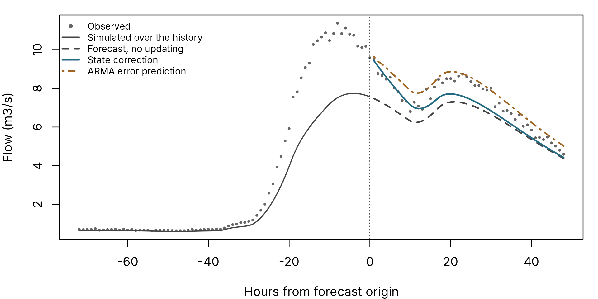

A calibrated model is never perfect. In a forecast, the model’s error at the moment the forecast is issued, the forecast origin, is known: the river has been measured. Updating uses that knowledge. Moore (2007) gives two methods, and pdmS7 implements both.
| Method | Function | What it adjusts |
|---|---|---|
| State correction (Eq. 28-30) | correct_state() |
The model’s stores at the origin, so its flow moves towards the observation |
| ARMA error prediction (Eq. 31-42) |
fit_error_updater(), then
update_forecast()
|
The forecast itself, by projecting the pattern of recent errors |
Both run in the compiled core, so they are available from other
languages too: pdm_correct_state() and
pdm_update_forecast(). Fitting the ARMA coefficients is
estimation, like calibration, and stays in the host language.
An example
A “true” catchment produces the observations. The forecasting model is deliberately imperfect: its rainfall factor is 15 per cent low and its groundwater store is too slow. We run it over 30 days of history, then forecast 48 hours ahead with perfect knowledge of future rainfall, so that the only error is the model’s.
set.seed(21)
n_history <- 24 * 30
n_forecast <- 48
n <- n_history + n_forecast
rain <- ifelse(stats::runif(n) < 0.05, stats::rgamma(n, 0.7, scale = 3), 0)
rain[n_history - 30:20] <- 3
rain[n_history + 10:16] <- 2
forcing <- data.frame(rain = rain, pet = 0.08)
truth <- pdm_model(area_km2 = 50, groundwater = cubic_routing(kb = 8000))
observed <- run_pdm(truth, forcing, initial_state_from_flow(truth, 1, 0.7))$output$q_m3s *
exp(stats::rnorm(n, 0, 0.03))
model <- pdm_model(area_km2 = 50, fc = 0.85, groundwater = cubic_routing(kb = 15000))
past <- forcing[seq_len(n_history), ]
future <- forcing[n_history + seq_len(n_forecast), ]
history <- run_pdm(model, past, initial_state_from_flow(model, observed[1], 0.7))
simulated <- history$output$q_m3sNo updating
The plain forecast simply continues the model from its state at the origin.
plain <- run_pdm(model, future, history$state)$output$q_m3sState correction
correct_state() compares the model’s flow at the origin
with the observed flow and distributes the difference between the
surface and groundwater stores, in proportion to their shares of the
flow. Gains below 1 make partial corrections; gg also
adjusts the soil store.
correction <- correct_state(
model, history$state, observed[n_history],
state_updater("proportional", gb = 1, gs = 1, gg = 0.5)
)
corrected <- run_pdm(model, future, correction$state)$output$q_m3s
c(innovation_mmh = correction$innovation_mmh, added_mm = correction$correction_mm)
#> innovation_mmh added_mm
#> 0.1480093 1.7594328ARMA error prediction
fit_error_updater() fits an autoregressive model to the
errors over the history. Here the errors are taken on the log scale, so
a 10 per cent error at high flow counts the same as at low flow.
update_forecast() then projects the recent errors forward
and applies them to the plain forecast.
fit <- fit_error_updater(observed[seq_len(n_history)], simulated, order = c(2, 0),
scale = "log", offset = 0.01)
fit$updater@ar
#> [1] 0.5474005 0.4347131
arma <- update_forecast(fit$updater, observed[seq_len(n_history)], simulated, plain)$forecast
hours <- seq(-72, n_forecast)
past_hours <- hours[hours <= 0]
par(mar = c(4, 4, 1, 1))
plot(hours, observed[n_history + hours], pch = 16, cex = 0.5, col = "grey40",
xlab = "Hours from forecast origin", ylab = "Flow (m3/s)",
ylim = range(c(observed[n_history + hours], plain, corrected, arma)))
lines(past_hours, simulated[n_history + past_hours], col = pal[5], lwd = 1.5)
abline(v = 0, lty = 3)
lines(seq_len(n_forecast), plain, col = pal[5], lwd = 2, lty = 2)
lines(seq_len(n_forecast), corrected, col = pal[1], lwd = 2)
lines(seq_len(n_forecast), arma, col = pal[2], lwd = 2, lty = 4)
legend("topleft", c("Observed", "Simulated over the history", "Forecast, no updating",
"State correction", "ARMA error prediction"),
col = c("grey40", pal[5], pal[5], pal[1], pal[2]), pch = c(16, NA, NA, NA, NA),
lty = c(NA, 1, 2, 1, 4), lwd = 2, bty = "n", cex = 0.75)
The last three days of history and the 48-hour forecast. Points are observations; the vertical line is the forecast origin.
Choosing between them
-
State correction removes the error at the origin,
and its effect fades as the corrected stores drain. It suits errors in
the model’s state: missed rainfall, a poor starting state. It needs
td = 0, because with an outlet delay the observation reflects earlier states. - ARMA error prediction carries a persistent error pattern forward, and suits systematic error such as a biased rainfall factor. It needs enough history to fit, and the fitted coefficients describe the errors of one model in one catchment; refit after recalibrating.
- The two can be combined: correct the state, then fit the ARMA model to the errors of the corrected runs. Judge any combination on held-out forecasts, not on the history it was fitted to.
These are the methods for operational forecasting. A benchmark of simulation skill, such as a comparison with machine learning models in simulation mode, should not use them: there, neither model sees observed flow at run time.